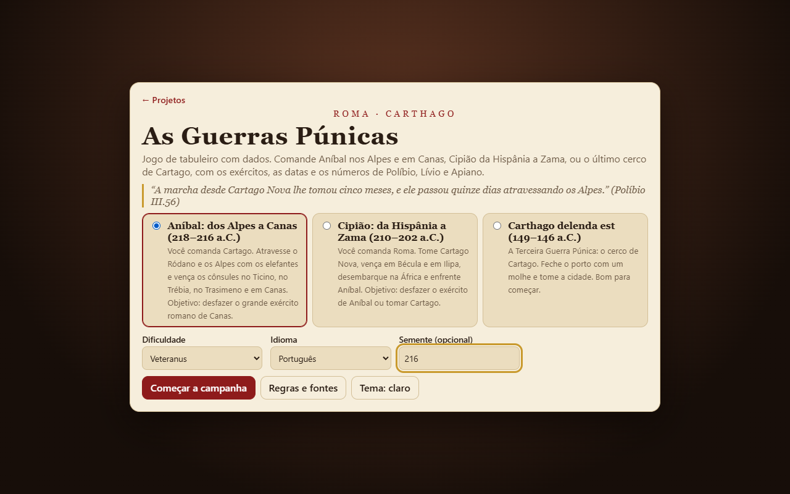
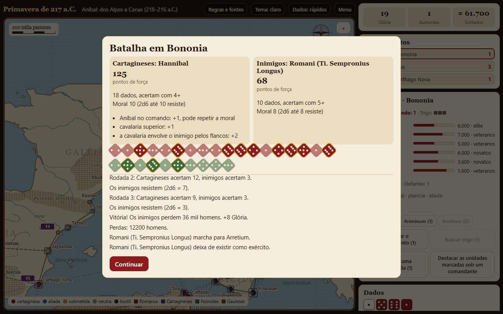
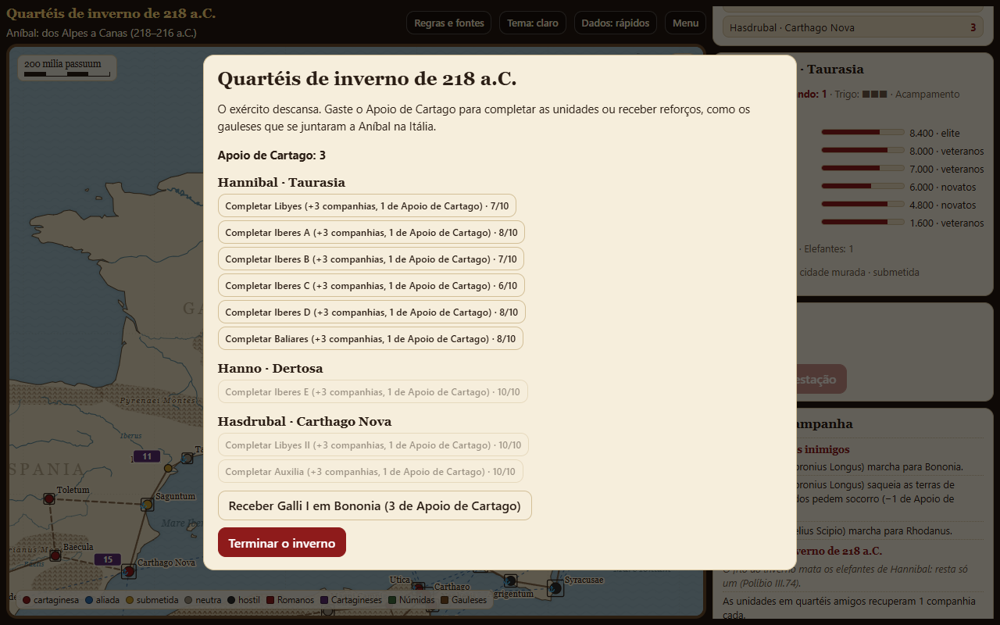

O jogo em um minuto
Você comanda um dos lados das guerras entre Roma e Cartago: Aníbal, que atravessa os Alpes; Cipião, que leva a guerra da Hispânia à África; ou os cônsules do último cerco de Cartago. O mapa vai da Hispânia à Sicília e à África, e os inimigos aparecem nas datas e com os números que os autores antigos registram. Os dados decidem quanto seus exércitos conseguem fazer e quem vence as batalhas.
Para vencer, cumpra o objetivo do cenário. No caminho, junte Glória e não deixe acabar o apoio político: a Auctoritas do Senado, para Roma, ou o Apoio de Cartago, para Aníbal.
↑ Voltar ao topoA história
O relato mais próximo é o de Políbio, um grego que viveu em Roma e acompanhou Cipião Emiliano em Cartago. Lívio escreveu quase dois séculos depois e às vezes dá várias versões para o mesmo número. Para a Terceira Guerra, o relato contínuo que chegou até nós é o de Apiano.
Aníbal na Itália (218–216 a.C.)
- 218 — O Ebro, o Ródano e os Alpes. Aníbal cruza o Ebro com cerca de 90.000 infantes e 12.000 cavaleiros, deixa Hanão com 10.000 infantes e 1.000 cavaleiros e segue com 50.000 infantes, cerca de 9.000 cavaleiros e 37 elefantes. No Ródano, os elefantes sobem em grandes jangadas atrás de duas fêmeas. A marcha desde Cartago Nova dura cinco meses, e a travessia dos Alpes, quinze dias; chegam à Itália 12.000 africanos, 8.000 iberos e não mais de 6.000 cavaleiros. [1]
- 218 — O Trébia. Os cônsules reúnem cerca de 16.000 romanos e 20.000 aliados. Magão espera escondido com 1.000 cavaleiros e 1.000 infantes. Depois da batalha, morrem todos os elefantes, menos um. [1]
- 217 — Trasimeno e Fábio. Nos pântanos, Aníbal perde um olho por uma inflamação. Junto ao lago Trasimeno caem cerca de 15.000 romanos, entre eles o cônsul Flamínio; Aníbal perde cerca de 1.500 homens. Roma nomeia Fábio ditador, e ele se recusa a aceitar batalha. [1]
- 216 — Canas. Roma põe em campo oito legiões: com os aliados, cerca de 80.000 infantes e pouco mais de 6.000 cavaleiros. Aníbal tem cerca de 10.000 cavaleiros e pouco mais de 40.000 infantes. Morrem cerca de 70.000 romanos; Aníbal perde cerca de 4.000 celtas, 1.500 iberos e africanos e 200 cavaleiros. [1] Depois de Canas, Cápua faz a paz com Aníbal. [2]
Cipião, da Hispânia a Zama (210–202 a.C.)
- 209 — Cartago Nova. Na cidadela há só cerca de 1.000 soldados treinados, e a laguna atrás da cidade baixa ao fim do dia. Cipião ataca com cerca de 25.000 infantes e 2.500 cavaleiros. [1]
- 208–206 — Bécula, Metauro e Ilipa. Em Bécula, Cipião faz cerca de 10.000 infantes e mais de 2.000 cavaleiros prisioneiros. Asdrúbal Barca escapa para a Itália e cai no Metauro, com pelo menos 10.000 cartagineses e gauleses. Em Ilipa, os cartagineses reúnem cerca de 70.000 infantes, 4.000 cavaleiros e 32 elefantes, contra 45.000 infantes e 3.000 cavaleiros de Cipião. [1]
- 204–202 — África e Zama. Lívio não sabe quantos homens Cipião levou: uns dizem 10.000 infantes e 2.200 cavaleiros, outros 16.000 e 1.600, outros o dobro; eram 40 navios de guerra e 400 transportes. [2] Cipião incendeia de noite os acampamentos de Asdrúbal e de Sífax e vence nos Campos Magnos. Em Zama, Masinissa chega com 6.000 infantes e 4.000 cavaleiros; Aníbal tem mais de 80 elefantes. Caem mais de 1.500 romanos e 20.000 cartagineses, e quase outros tantos são presos. [1]
Carthago delenda est (149–146 a.C.)
- Útica se entrega a Roma. Os cônsules chegam com 50 quinquerremes e 100 hemíolias, 80.000 infantes e cerca de 4.000 cavaleiros. Cartago entrega armas para 200.000 homens e 2.000 catapultas, mas decide resistir. Cipião Emiliano fecha o porto com um molhe; os cartagineses abrem uma nova saída. Da Birsa saem 50.000 homens e mulheres, e Cipião chora diante da cidade em chamas. [3]
Primeiros passos

| Cenário | Seu lado | Duração | Objetivo |
|---|---|---|---|
| Carthago delenda est | Roma | 149 a 146 a.C. | Tomar Cartago. Comece por aqui. |
| Aníbal: dos Alpes a Canas | Cartago | 218 a 216 a.C. | Desfazer o exército romano de Canas. |
| Cipião: da Hispânia a Zama | Roma | 210 a 202 a.C. | Desfazer o exército de Aníbal ou tomar Cartago. |
- Dificuldade. Tiro dá um dado e um ponto de comando a mais ao seu lado; Imperator dá um dado a mais aos inimigos e os deixa mais ousados.
- Semente. O mesmo número repete os mesmos dados, desde que você dê as mesmas ordens na mesma ordem. Use 216 para seguir o exemplo deste tutorial.
- Salvamento. A campanha fica salva no navegador; o botão Continuar volta a ela.
O mapa e o painel

- Cidades. A cor diz a situação para o seu lado: vermelha, sua (romana ou cartaginesa); azul, aliada; dourada, submetida; cinza, neutra; preta, hostil. O quadrado indica muralhas, e a âncora marca os portos.
- Estradas. Linhas cheias custam o número indicado; tracejadas longas atravessam montanhas; a pontilhada curta é o Ródano, que só se atravessa depois de reunir barcos; pontilhadas azuis são rotas marítimas. A passagem dos Alpes custa muitos homens.
- Fichas. As vermelhas são romanas e as roxas, cartaginesas, seja qual for o seu lado; ★ marca o seu comandante, e o número diz quantos milhares de homens há. O símbolo de muralha indica que estão dentro da cidade.
- Painel. Mostra os pontos de comando do exército escolhido, o trigo (■■■), as unidades com os homens e a experiência, a cavalaria, os elefantes e os botões de ordens.
- Navegação. Arraste, use a roda do mouse ou os botões + e − e volte à vista inicial com ⤢. A escala está em milia passuum, milhas romanas de 1,48 km.
O relevo, os rios e os litorais vêm do Natural Earth, e os nomes estão em latim. [4]
↑ Voltar ao topoUma estação, passo a passo
- Fortuna. Um dado traz chuvas (−1 ponto para cada exército), comboios de trigo, batedores (+1 ponto para o comandante) ou bons auspícios (+1 de apoio).
- Comando. Cada exército rola um dado. Aníbal recebe 3 + metade do dado, arredondada para cima; Cipião, 2 + metade; os outros, 1 + metade.
- Suas ordens. Escolha um exército e gaste os pontos:
| Ordem | Custo | Para quê |
|---|---|---|
| Marchar / Navegar | 1 a 3 | Ir a uma cidade vizinha ou a outro porto. No cenário de Aníbal, a frota romana ameaça as travessias. |
| Fortificar o acampamento | 1 | +3 dados se for atacado, até sair do lugar. |
| Preparar uma emboscada | 1 | Só Aníbal: +3 dados na primeira rodada se o inimigo atacar. |
| Buscar trigo | 1 | Recupera o trigo se o dado ajudar. |
| Obras de cerco / Assaltar | 1 | Contra inimigos atrás de muralhas. |
| Exigir reféns | 1 | Passa uma cidade neutra ou hostil sem inimigos para o seu lado. |
| Reunir barcos | 2 | Abre a travessia do Ródano a partir desta margem. |
| Construir uma frota | 3 | Num porto amigo; permite cercar cidades que recebem víveres pelo mar. |
| Fechar o porto com um molhe | 3 | Só Cipião Emiliano, em Cartago. |
| Destacar / Unir | 0 | Divide as unidades sob um comandante ou junta dois exércitos. |
- Encerrar a estação (botão ou tecla E). Os inimigos agem: exércitos de campo atacam quando se acham mais fortes, guarnições ficam atrás das muralhas e Fábio segue você sem aceitar batalha.
- Trigo. Exércitos em terra amiga, aliada ou submetida se reabastecem; os outros gastam trigo.
Os eventos históricos
No cenário de Aníbal, os cônsules entram nas datas dos relatos: Públio Cipião em Massília no verão de 218, Semprônio no outono, Flamínio e Servílio em 217, Fábio no verão de 217 e o grande exército de Varrão e Paulo no verão de 216. No de Cipião, Asdrúbal parte para a Itália em 207, Ilipa vem em 206, Sífax muda de lado em 204, Aníbal volta em 203 e Masinissa chega em 202. [1] [2]
Alguns eventos dependem do que você faz: Cápua só passa para o lado de Aníbal se o exército de Canas foi desfeito. Contra os númidas, um exército acampado pode ter de escolher entre ficar ou sair em perseguição, e sair dá a eles a vantagem da emboscada.
↑ Voltar ao topoCercos e assaltos
- Obras de cerco. Cada ordem soma um dado + metade do número de unidades (+2 com o comandante). A cidade cai quando o total chega a 6 vezes a fortificação: 24 em Cartago Nova, 30 em Cartago e em Roma. A cada estação, os sitiados gastam um ponto de víveres; sem víveres, rendem-se.
- Assalto. É uma batalha em que o defensor ganha dados pelas muralhas (fortificação + 1). É rápido, mas custa homens.
- Cidades abastecidas pelo mar. No cenário de Cipião, Cartago só pode ser cercada por um exército com frota. Em 149, a cidade recebe víveres pelo porto, e só Cipião Emiliano, que chega em 147, consegue fechá-lo com o molhe, como conta Apiano. [3]
As batalhas

- Força de combate. Cada 480 homens valem 1 ponto (veteranos 1,35; elite 1,7). Mil cavaleiros valem 1,2 no exército de Aníbal e 0,8 no romano. Mil guerreiros inimigos valem 0,6 vezes a qualidade deles; mil soldados de infantaria pesada, 2 vezes a qualidade.
- Dados. Um dado para cada 7 pontos, mais os modificadores: terreno do defensor (monte +2), muralhas, acampamento (+3), cavalaria superior (+1), comandante (+1), fome (−2), emboscada (+3 na primeira rodada), elefantes (+2 a +3) e, para Aníbal, o envolvimento pela cavalaria (+2) quando ela é bem superior.
- Acertos e moral. Tropas veteranas acertam com 4 a 6; novatos e a maioria dos inimigos, com 5 ou 6. Cada acerto tira 3 pontos. Depois de cada rodada, quem sofreu mais rola 2d6 de moral: acima do valor, foge, e a cavalaria persegue.
- Fim. Depois de três rodadas sem fuga, a batalha empata. Se o exército do comandante foge, há 1 chance em 12 de ele morrer.
Trigo e inverno
Cada exército tem até 3 de trigo. Fora de terra amiga, perde 1 por estação; com 0, perde homens por fome e deserção e luta com 2 dados a menos.

- Exércitos em quartéis amigos recuperam 1 companhia por unidade; fora deles, perdem 2.
- Unidades que venceram no ano podem ganhar experiência.
- As vitórias do ano rendem até 3 de apoio. Completar uma unidade custa 1; receber uma nova, 3. Abaixo de −3, o comandante é chamado de volta.
- No primeiro inverno na Itália, os elefantes de Aníbal morrem, menos um, como conta Políbio. [1]
Sua primeira campanha: Aníbal em 218
Comece o cenário Aníbal: dos Alpes a Canas com a semente 216 e a dificuldade Veteranus. As telas são dessa partida, jogada por cliques reais; dando as mesmas ordens na mesma ordem, você verá os mesmos dados. [5]
- Leia a situação. Aníbal está em Dertosa com 50.000 infantes em seis unidades, 9.000 cavaleiros, 37 elefantes e 5 pontos de comando. Hanão tem 10.000 infantes ali mesmo; Asdrúbal guarda Cartago Nova com 12.650 infantes e 21 elefantes. Os romanos de Semprônio estão na Sicília.
- Primavera: até os Pireneus. Marche com Aníbal para Tarraco (1 ponto), Empórias (2) e Ruscino (1). Encerre a estação.
- Verão: o Ródano. Chega a notícia: o cônsul Públio Cipião desembarcou em Massília. Em Ruscino, Reúna barcos e jangadas (2 pontos): ficam prontos na primeira tentativa. Atravesse para o Ródano (2) e encerre a estação.
- Outono: os Alpes. Marche para os Alpes (2) e desça para Taurásia (2). A travessia custa 19.200 infantes e parte da cavalaria: Aníbal chega com 30.800 infantes e 6.300 cavaleiros, e ganha 5 de Glória. Com o último ponto, exija reféns de Taurásia: a cidade aceita, e o exército vai invernar em terra submetida.
- Inverno. Os elefantes morrem, menos um. Em Taurásia, cada unidade recupera uma companhia, e o exército volta a 35.800 infantes. Gaste 2 de apoio para completar os líbios e os iberos A: são 41.400.
- Primavera de 217: Bonônia. Marche para o Ticino (1), Placência (1) e Bonônia (2), onde está Semprônio com 36.000 homens. A batalha começa sozinha: 125 contra 68 pontos de força, 18 dados contra 10, com +2 pelo envolvimento da cavalaria. Os romanos resistem três rodadas, mas perdem 36.000 homens, e o exército deles deixa de existir. Você perde 12.200. A Glória chega a 19.
- Próximos passos. Flamínio espera em Arrécio e Servílio em Arímino. No verão, Fábio sai de Roma e segue você sem aceitar batalha. No verão de 216, Varrão e Paulo marcham de Roma para Canas com 80.000 homens: chegue com a cavalaria inteira e, se puder, receba antes os gauleses em Bonônia.
Neste teste, preparar uma emboscada em Placência não adiantou: Semprônio não atacou, porque o exército de Aníbal era maior. A emboscada só vale quando o inimigo vem até você.
↑ Voltar ao topoTáticas de batalha
Simulamos 4.000 batalhas para cada situação com o motor do jogo, na dificuldade Veteranus. A referência, do lado romano: um legado com quatro unidades veteranas (16.800 homens) e 1.000 cavaleiros ataca 30.000 cartagineses com 3.000 cavaleiros numa planície. [5]
| Situação | Vitória | Derrota | Empate | Homens perdidos |
|---|---|---|---|---|
| Referência | 72,2% | 5,3% | 22,6% | 5.310 |
| Com Cipião no comando | 86,4% | 0,1% | 13,5% | 5.120 |
| Seis unidades em vez de quatro | 96,8% | 1,1% | 2,1% | 4.660 |
| Unidades de elite | 93,5% | 0,9% | 5,7% | 4.060 |
| Unidades novatas | 22,2% | 31,9% | 45,9% | 8.080 |
| Cavalaria maior (5.000) | 74,5% | 3,4% | 22,1% | 4.490 |
| Inimigo num monte | 67,2% | 11,0% | 21,9% | 7.310 |
| Sem trigo | 40,7% | 18,0% | 41,3% | 5.790 |
| Atacado em campo aberto | 71,6% | 5,5% | 22,9% | 5.410 |
| Atacado em acampamento fortificado | 96,2% | 1,6% | 2,3% | 4.670 |
| Inimigo com elefantes | 64,2% | 14,0% | 21,8% | 8.280 |
Leve o comandante
Cipião acabou com as derrotas da referência (de 5,3% para 0,1%) e subiu a vitória para 86,4%.
Não lute com fome
Sem trigo, a vitória caiu para 40,7%. Termine as estações em terra amiga.
Os novatos fogem
Com unidades novatas, a vitória cai para 22,2%, e as derrotas sobem para 31,9%.
A cavalaria romana pesa pouco
Cinco vezes mais cavaleiros só subiram a vitória de 72,2% para 74,5%. Para Roma, conta mais a infantaria; para Aníbal, a cavalaria vale 1,2 e pode envolver o inimigo.
Espere atrás da paliçada
Atacado num acampamento fortificado, o exército venceu 96,2% das vezes.
Situações históricas
| Situação | Vitória | Empate | Homens perdidos |
|---|---|---|---|
| Trébia: Aníbal com 30.000 e os elefantes contra 36.000 romanos | 97,6% | 2,4% | 8.420 |
| 50.000 romanos atacam Aníbal em campo aberto | 67,1% | 32,9% | 11.600 |
| Os mesmos romanos atacam Aníbal em emboscada | 71,6% | 28,4% | 11.470 |
| Canas: Aníbal com 40.000 e 10.000 cavaleiros contra 80.000 | 56,9% | 43,0% | 14.380 |
| Canas, sem a cavalaria superior (3.000) | 48,9% | 50,7% | 14.890 |
| Zama: Cipião com Masinissa contra Aníbal e 80 elefantes | 44,2% | 55,5% | 13.520 |
| Zama, sem Masinissa | 38,0% | 61,7% | 13.440 |
São modelos do jogo, não da história. Medem as regras: em Canas e em Zama, mais da metade das batalhas termina empatada, e é preciso lutar de novo. A cavalaria de Aníbal e os reforços de Masinissa fazem diferença.
↑ Voltar ao topoEstratégias de campanha
- Com Aníbal, chegue à Itália em 218. A marcha de Dertosa a Taurásia pede 12 pontos: Pireneus, barcos no Ródano e Alpes. Não pare no caminho.
- Exija reféns antes do inverno. Em terra neutra, cada unidade perde 2 companhias. Taurásia e as cidades gaulesas são seus quartéis.
- Guarde a cavalaria. O envolvimento de Aníbal depende de ter cavaleiros bem acima dos do inimigo.
- Embosque quem vem até você. A emboscada só funciona se o inimigo atacar; use-a perto de exércitos romanos agressivos, não contra Fábio.
- Com Cipião, limpe a Hispânia primeiro. A África só pode ser invadida a partir de 205; até lá, tome Cartago Nova e vença Asdrúbal antes que ele parta para a Itália.
- Leve uma frota para Cartago. A cidade recebe víveres pelo mar; sem frota, o cerco não avança.
- No cerco de 149, espere Cipião Emiliano. Os cônsules não conseguem fechar o porto; use os dois primeiros anos para vencer Asdrúbal em Néferis.
Erros comuns
- Invernar em terra neutra. Num teste sem exigir reféns em Taurásia, Aníbal perdeu 13.000 homens entre a fome e o inverno.
- Gastar o apoio todo no primeiro inverno. Cada unidade aniquilada custa 2.
- Esperar uma emboscada contra um inimigo mais fraco. Ele não ataca; vá até ele.
- Levar Cipião para caçar Aníbal na Itália. Lá, Aníbal tem 40.000 veteranos e não se move; a guerra se decide na Hispânia e na África.
- Assaltar Cartago com tropas novatas. A fortificação 5 dá 6 dados ao defensor.
Glossário
- Apoio de Cartago
- O crédito de Aníbal junto ao conselho de Cartago; paga reforços.
- Auctoritas
- O prestígio do comandante romano junto ao Senado.
- Baleares
- Fundeiros das ilhas Baleares, a serviço de Cartago.
- Birsa
- A cidadela de Cartago.
- Companhia
- A décima parte de uma unidade no jogo.
- Cônsul
- Um dos dois magistrados eleitos a cada ano em Roma, que comandavam os exércitos.
- Ditador
- Magistrado romano com poder total por tempo limitado, como Fábio em 217.
- Legião
- A grande unidade romana; Políbio fala em cerca de 4.000 infantes e 200 cavaleiros, e em Canas, 5.000.
- Milia passuum
- Milhas romanas, de cerca de 1,48 km.
- Socii
- Os aliados italianos de Roma, que lutavam ao lado das legiões.
Revisão rápida
Em resumo
- Cada estação: Fortuna, pontos de comando, suas ordens, os inimigos, o trigo.
- Batalhas: um dado a cada 7 pontos de força; veteranos acertam com 4+; depois, moral com 2d6.
- Aníbal: cavalaria forte, envolvimento, emboscada e elefantes até o primeiro inverno.
- Cipião: Hispânia primeiro, África a partir de 205, frota para Cartago.
- Termine as estações e o inverno em terra amiga.
1. O dado de comando de Aníbal deu 4. Quantos pontos ele tem?
5: 3 + metade do dado (2).
2. Quanto o cerco precisa somar para tomar Cartago Nova, de fortificação 4?
24, 6 vezes a fortificação.
3. Quando a emboscada de Aníbal dá os +3 dados?
Só na primeira rodada, e só se o inimigo atacar o exército emboscado.
4. Por que os elefantes de Aníbal desaparecem?
No primeiro inverno na Itália, eles morrem, menos um, como no relato de Políbio.
5. Quem pode fechar o porto de Cartago em 149–146?
Só Cipião Emiliano, que chega em 147.
6. Qual situação das medições mais ajuda Roma?
Esperar no acampamento fortificado: 96,2% de vitória.
Referências
- Políbio. Histórias, tradução de W. R. Paton, em LacusCurtius. Ebro e Ródano (III.33–46), chegada à Itália (III.56), taurinos (III.60), Trébia (III.71–74), pântanos e Trasimeno (III.79–85), Fábio (III.87–90), Canas (III.107, III.113–117), Cartago Nova (X.8–15), Bécula (X.38–40), Metauro (XI.1–3), Ilipa (XI.20), acampamentos e Campos Magnos (XIV.1–8), Zama (XV.5, XV.11, XV.14).
- Tito Lívio. From the Founding of the City, tradução de Canon Roberts (1905), em Wikisource. Cápua (XXIII.7), a expedição à África (XXIX.24–27), o décimo sexto ano da guerra (XXX.1).
- Apiano. Guerras Púnicas, tradução de Horace White, em Livius.org. O exército de 149 e Útica (75), as armas entregues (80), o molhe (121), a Birsa e as lágrimas de Cipião (130–132).
- Natural Earth. naturalearthdata.com. Terra, lagos, rios e cordilheiras, em domínio público. Os litorais são os atuais.
- Medições próprias com o motor do jogo As Guerras Púnicas: a partida das telas (semente 216; o cerco de Cartago Nova com a semente 209) e 4.000 batalhas simuladas por situação. Medem as regras do jogo, não a história.

![Mappa del Mediterraneo occidentale, dalla Spagna all’Italia e all’Africa, con rilievo tratteggiato, fiumi e città collegate da strade e rotte marittime. Segnalini viola mostrano gli eserciti cartaginesi: Annibale a Dertosa, con una stella e 59 mila uomini, Annone con 11 mila e Asdrubale con 15 mila a Cartagine Nuova. Un segnalino rosso mostra i Romani a Lilibeo. A destra, Gloria, Auctoritas e soldati, l’elenco degli eserciti e il pannello di Annibale, con sei unità, 9 mila cavalieri e 37 elefanti.](rc_images/PunMesa-it.png)